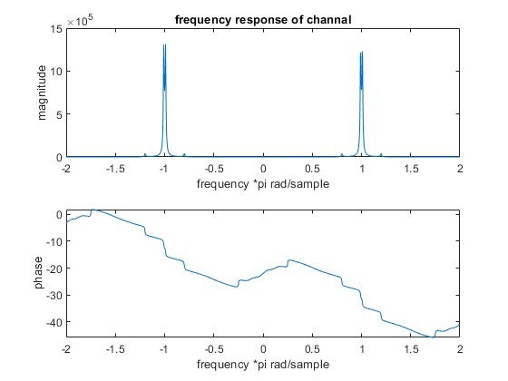

Contents
clear recent data
clear,clc,close all
audioread
[x_m,fs_m] = audioread('HW1_Q4_voice.wav');
time_m = 0:1/fs_m:length(x_m)/fs_m-1/fs_m;
frequency response of channal
load('a.mat');
load('b.mat');
[h ,w]=freqz(b,a,-2*pi:1/100:2*pi);
figure()
subplot(2,1,1)
plot(w/pi,abs(h))
title('frequency response of channal')
xlabel('frequency *pi rad/sample')
ylabel('magnitude')
subplot(2,1,2)
plot(w/pi,phase(h))
xlabel('frequency *pi rad/sample')
ylabel('phase')

pole-zero locations of the channel system
figure()
zplane(b,a)
title('zplane of the channal')
frequency response of input audio
xmfft=fft(x_m);
f1=linspace(-fs_m/2,fs_m/2,length(x_m));
figure()
subplot(2,1,1)
plot(f1,abs(xmfft))
title('freqeuncy response of input audio')
xlabel('frequency')
ylabel('magnitude')
subplot(2,1,2)
plot(f1,angle(xmfft))
xlabel('frequency')
ylabel('phase')
distorted signal
Xh1=filter(b,a,x_m);
xh1fft=fft(Xh1);
figure()
subplot(2,1,1)
plot(f1,abs(xh1fft))
xlabel('frequency')
ylabel('magnitude')
title('frequency response of distorted signal')
subplot(2,1,2)
plot(f1,angle(xh1fft))
xlabel('frequency')
ylabel('phase')
figure()
plot(time_m,Xh1)
xlabel('time')
ylabel('amplitude')
title('distorted signal in time domain')
equalizer
zerosmin=[0.7000 + 0.7000i, 0.7000 - 0.7000i, 0.8315 + 0.3444i,0.8315 - 0.3444i,0.8982 + 0.0565i,0.8982 - 0.0565i,0-(1/1.5)*1i,1/1.5,0+(1/1.5)*1i];
polyz=poly(zerosmin);
gD=tf(polyz,a);
f=1/gD;
[num,den]=tfdata(f,'v');
[hz, wz]=freqz(num,den,-2*pi:1/100:2*pi);
figure()
subplot(2,1,1)
plot(wz/pi,abs(hz))
xlabel('frequency *pi rad/sample')
ylabel('magnitude')
title('frequency response of equalizer')
subplot(2,1,2)
plot(wz/pi,angle(hz))
xlabel('frequency *pi rad/sample')
ylabel('phase')
figure()
zplane(num,den)
title('zplane of equalizer')
frequency response of overall system
Xh=filter(num,den,Xh1);
Xh=Xh(1:end);
xhfft=fft(Xh);
figure()
subplot(2,1,1)
plot(f1,abs(xhfft))
xlabel('frequency')
ylabel('magnitude')
title('frequency response of overall system')
subplot(2,1,2)
plot(f1,angle(xhfft))
xlabel('frequency')
ylabel('phase')
quantize the coefficients of the equalizer
n1=4;
[bhat1,ahat1]=quantize1(num,den,n1);
n2=8;
[bhat2,ahat2]=quantize1(num,den,n2);
n3=16;
[bhat3,ahat3]=quantize1(num,den,n3);
n4=32;
[bhat4,ahat4]=quantize1(num,den,n4);
figure()
subplot(2,2,1)
zplane(bhat1,ahat1)
title('4 bits')
subplot(2,2,2)
zplane(bhat2,ahat2)
title('8 bits')
subplot(2,2,3)
zplane(bhat3,ahat3)
title('16 bits')
subplot(2,2,4)
zplane(bhat4,ahat4)
title('32 bits')
quantization function
function [bhat,ahat]=quantize1(num,den,n)
nonfraca = fix(log2(max(abs(den(1:end)))));
nonfracb = fix(log2(max(abs(num))));
qa = n-nonfraca;
qb = n-nonfracb;
ahat = fix(den*2^qa)/2^qa;
bhat = fix(num*2^qb)/2^qb;
end